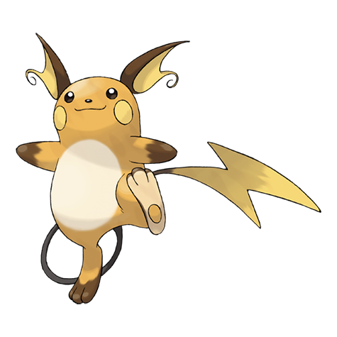

ライチュウの弱点(2倍)
じめん
#026 · でんき · ねずみポケモン · 第1世代
ライチュウは、多くのプレイヤーが最後まで踏み出さない進化です。素早さ110、弱点は1つ、そしてピカチュウがマスコットだからと、半分の人が触れようとしないかみなりのいし。

BST 485
特性:せいでんき · ひらいしん(隠れ特性) · 進化段階:最終
弱点側に並ぶのはじめんだけで、どれも同じ18タイプの相性から読み取ったものです。参照元は タイプ相性表.
じめん
でんき ひこう はがね
ゼニガメも読む価値のあるカントーの最初の3匹で、ゲンガーは同じ世代の速い特殊アタッカーを担当します。
進化するねずみ
26番は、カントーから続く3段階の進化の終点にいます。ピチュー、ピカチュウ、そしてライチュウ。タイプはでんき単体、特性はせいでんきとひらいしん、ここから先に進化はありません。最後の一歩はレベルではなく、かみなりのいしが要ります。
第7世代で追加されたリージョンフォルムのアローラライチュウもいます。こちらはエスパーが加わり、体つきもまったく違います。このページでは通常のライチュウを扱います。シリーズのどの地方図鑑にも載っているのは、こちらだからです。リージョンの亜種はタイプも相性も別物なので、同じつもりで組んではいけません。
2倍で入るのはじめんだけです。でんき、ひこう、はがねはすべて軽減されます。無効はひとつもなく、でんきタイプとしては少し珍しい形です。受けのタイプを丸ごと無視することはできないからです。
この1つの弱点が守りのすべてで、しかも両方向に効きます。じめん技が来たらそこで終わり。それ以外は等倍かそれ以下なので、素の耐久では耐えられないはずの勝負を、ライチュウはかなり拾えます。穴が1つなら3つよりずっと組み立てやすく、採用したパーティは誰を遠ざけるべきかを正確に知っています。
使う理由は素早さです。110は図鑑のほとんどより前を取り、攻撃90・特攻90のポケモンではその1ターンが大きな意味を持ちます。どちらの攻撃も使えるので、型を片側に固定する必要もありません。
コストは守りの列にあります。HP60、防御55、特防80では本物の一撃は受けられず、初撃を耐えた相手はすべて問題になります。ライチュウは先に動いて早く決めるために作られていて、長居するポケモンではありません。誰かが初撃を受けたあとに入れれば、弱点は問題にならなくなります。
せいでんきは触れた相手をまひさせる可能性があり、悪い相性を遅い相性に変えます。隠れ特性のひらいしんはでんき技を自分へ引き寄せて特攻上昇に変換するので、でんきの相手は脅威ではなく無料のセットアップになります。
この反転のほうが面白い選択肢ですが、相手が実際にでんき技を持ってくることが条件です。多くのパーティ相手なら、せいでんきが存在するだけで仕事をします。どちらを選んでも、下にある薄い守りの列は同じです。ここでの特性選びは、どちらが紙の上で強いかではなく、相手が何をしてきそうかで決まります。
ピカチュウはかみなりのいしでライチュウになります。必要なのはそれだけです。そしてこれが、このポケモンが妙な評判を持つ理由でもあります。中間進化がシリーズの顔なので、かなりの人数がわざとこの道具を使いません。
仕組みの上では、進化にマイナスはありません。小さな姿を失うだけです。ライチュウはタイプを保ち、はるかに良い種族値を受け取り、シリーズの多くの最終進化より10レベル早く完成します。
まず パーティ編成 でパーティを並べ、気絶が取り返しのつかないルールなら ヌズロック編成 にルールを預け、余った枠は ランダム選出.
この ポケモン性格表 で性格の判断を、 個体値計算 で数値が実際どうなるかを確かめられます。細かい決めごとが残ったら、 ポケモンルーレット 代わりにこちらを。
おまけもどうぞ。狩りには ランダム色違い生成 、追いかけている確率は 色違いの出現率 、大きな姿を引きたいなら ランダムメガシンカ 、そして当てクイズには このポケモンだあれ？ がぴったりです。
ライチュウが欲しいのは2ターンで終わる勝負です。先に動き、より高い攻撃値で打ち、返しのダメージが届く前に去ります。パーティでは先発か、誰かが倒れたあとに入れるリベンジ役として働きます。
じめんタイプが明白な答えで、そこは避けられません。それ以外は素早さで不利を認めるしかなく、それがこのポケモン唯一の実質的な強みであり、古い世代の構築でも姿を見せる理由です。
この図鑑の速いポケモンの多くは、耐久も火力もなくて使えません。ライチュウは攻撃と特攻の両方が90で、素早さを意味のあるものにするにはちょうど足りています。弱点も1つだけで、パーティでかばえます。
チームを背負うポケモンではありません。1つの仕事をきちんとこなすポケモンで、古い作品ではその仕事だけで足りることもよくありました。そこそこ当たる速いポケモンは、どの世代でも持っていると便利です。素早さはポケモンで最も安いアドバンテージで、これはそれを買う最も安上がりな方法のひとつです。
よくある質問
でんき単体です。そのため弱点1つ、耐性3つ、無効なしという、この水準のポケモンとしては薄い守りの表になります。
じめんだけです。でんき、ひこう、はがねは軽減され、こちらが撃つ技を完全に無効にするタイプもありません。
ピカチュウにかみなりのいしを使うとライチュウになります。その前は、ピチューがなつき度でピカチュウになり、ライチュウから先の進化はありません。
通常がせいでんき、隠れ特性がひらいしんです。せいでんきは触れてきた相手をまひさせることがあり、ひらいしんはでんき技を吸って特攻上昇に変えます。
3段階です。ピチュー、ピカチュウ、そしてかみなりのいしでライチュウ。系統はライチュウで終わるので、この先を考えておく必要はありません。
先に動くことです。素早さ110に攻撃90・特攻90が乗るので、狙った相手を選び、図鑑の大半が反応する前に打てます。役割の根拠はここにあります。